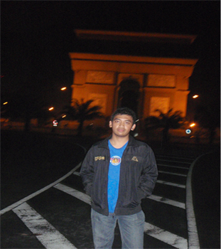

Risqi Adi Pratama

Hai, saya Risqi. Saya lahir dan besar di kota malang yang terkenal dengan kota pendidikan. Saat ini tengah menyelesaikan studi di salah satu perguruan tinggi negeri di kota Malang.
Mulai mengenal komputer dan internet semenjak masuk sekolah menengah serta tertarik mempelajari web desain secara otodidak.
Di waktu luang, biasanya saya melakukan browsing berita maupun di forum - forum seprti kaskus maupun indowebster.